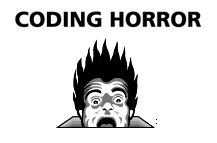
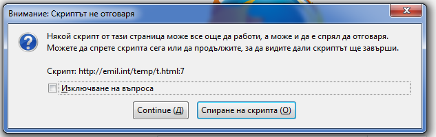

Lecture 2 - Conditionals and Loops
Условни конструкции
Условните конструкции дават възможност на кода да променя поведението си според определено условие.
Има 3 вида условни конструкции:
if - elseswitchcondition ? when-true : when-false- троичен оператор
if (exp) {} else {}
var number = 5;
if (number === 5) {
console.log("Number is 5. ");
} else {
console.log("Number is not 5. ");
}
Ако израза exp е truthy се изпълнява кода в блока след if. Ако не е, се изпълнява блока след else клаузата. Клаузата else е незадължителна.
В ситуации, в които има повече от 2 случая може да се ползва else if конструкцията:
var number = 5;
if (number < 2) {
console.log("lower than 2");
} else if (number < 8) {
console.log("lower than 8");
} else {
console.log("greater than 8");
}
if syntax
Фигурните скоби около блока код след улсовието не е задължителен и може да бъде пропуснат.
if ( a === b )
do_something();
do_something_else();
Това е лоша практика, защото в действителност се случва следното:
if ( a === b ) {
do_something();
}
do_something_else();
Дори когато има само 1 ред слагайте фигурните скоби, за да може лесно да добавяте дебъг код когато е нужно.
switch
var direction = 2;
switch (direction) {
case 1: console.log("North"); break;
case 2: console.log("East"); break;
case 3: console.log("South"); break;
case 4: console.log("West"); break;
default: console.log("Error"); break;
}
switch конструкцията се ползва, когато дадена променлива може да има една от няколко предварително определени стойности. case указва какво трябва да се случи ако променливата има конкретна стойност. default клаузата указва какво да се случи, ако никой от изброените случаи не е удовлетворен.
Всяка switch конструкция може да се замести с if-elseif-elseif-else клауза:
if (direction === 1) {
console.log("North");
} else if (direction === 2) {
// ...
} else {
console.log("Error");
}
switch: break
След края на всеки case трябва да има break. В противен случай switch-а ще прoдължи със следващите case-ове:
var direction = 3;
switch (direction) {
case 2: console.log("East"); /* break; */
case 3: console.log("South"); /* break; */
case 4: console.log("West"); /* break; */
default: console.log("Error"); /* break; */
}
// => South West Error
Това поведение позволява да имате код, хващащ няколко случая така:
var res = 1;
switch (res) {
case 1:
case 2:
console.log("res"); break;
case 3:
console.log("bla"); break;
}
condition ? when-true : when-false
var user_age = 15; var user_group = age < 20 ? "teenager" : "adult"; // user_group is now "teenager"
Троичния оператор е прост начин да напишете if, който връща стойност.
Той се състои от следните клаузи:
- условие -- израза преди
? - стойност ако е вярно -- израза между
?и: - стойност ако е грешно -- израза след
:
Можете да вложите 2 троични оператора един в друг, но не го правете:
var age_group = age < 20 ? age < 12 ? "child" : "teenager" : "adult";
Този оператор може да бъде елегантен начин да изразите логиката си. Използван неправилно, може да причини много проблеми.
Loops - Цикли
Цикъл е конструкция повтаряща последователно блок от код докато определено условие е изпълнено. Всяка итерация(повторение) може да променя променливите, които участват в условито на цикъла, така че в един момент то да стане невярно, обхождането да спре, и изпълнението да продължи с кода идващ след цикъла.
В javascript има 3 основни вида цикъл:
forс броячwhileforза обхождане на обект
for цикъл с брояч
Пример:
for (var i = 0; i < 10; i++) {
console.log("i is now " + i);
}
Този вид цикъл е подходящ, когато трябва да извършите дадена операция определен брой пъти.
for цикъла се състои от следните части:
- Ключовата дума
for - Инициализация:
var i = 0 - Условие:
i < 10 - Стъпка:
i++ - Тяло:
console.log("i is now " + i);
for цикъл: зад кулисите
+-->for (var i = 0; i < 2; i++) { --+
| console.log("i is now " + i); |
+---} <-----------------------------+
console.log("Loop completed");
Ето какво ще се случи зад кулисите:
var i = 0;
console.log("i is now 0");
i++; // i is now 1
i < 2 ? true ...
// Условието е вярно, връщаме се в началото,
// прилагаме стъпката и изпълняваме тялото отново
console.log("i is now 1");
i++; // i is now 2
i < 2 ? false ... // Условието вече не е вярно, излизаме от цикъла ...
console.log("Loop completed");
while цикъл
while цъкъла повтаря блок от код докато определен expression е truthy:
var counter = 0;
while (counter < 5) {
console.log("Counter is " + counter);
counter++;
}
Преди да започне изпълнението на цикъла, трябва да се инициализира състоянието на средата.
Всяка итерация на цикъла трябва да извършва определа работа, така че в един момент условието да стане false.
Цикъла се състои от следните клаузи:
- ключовата дума while
- условието на цъкъла в кръгли скоби след ключовата дума
- блок от код, който ще бъде изпълняван докато условието е truthy
while цикъл: зад кулисите
var counter = 0;
while (counter < 2) {
console.log("Counter is " + counter);
counter++;
}
console.log("Loop completed");
Ето какво ще се случи зад кулисите:
var counter = 0;
// Starting loop ...
console.log("Counter is " + counter);
counter++; // Counter става равно на 1
// Loop condition: counter < 2 ? true
console.log("Counter is " + counter);
counter++; // Counter става равно на 2
// Loop condition: counter < 2 ? false
// Exiting loop ...
console.log("Loop completed");
do {} while ()
Разновидност на while цикъла, в която условието се дава след тялото на цикъла:
- Тялото на цикъла се изпълнява поне 1 път
-
Удобен, когато в тялото на цикъла се извършва задача, която може да се провали и да се опита да се направи наново:
var name; do { name = window.prompt('Please enter your name'); } while(name.length < 2); console.log("Name is " + name);Алтернативата на това е:
var name = window.prompt('Please enter your name'); while(name.length < 2) { name = window.prompt('Please enter your name'); } console.log("Name is " + name);do-whileцикъла избягва повторение.
Безкрайни цикли
Когато има комплексна логика в условието на цикъла е възможно да изпаднете в ситуация, в която то никога не става грешно:
for (var i=0; i < 10; i--) {
console.log("i is now " + i);
}
Можете ли да намерите проблема в този код?
Резултата от него е около 60 секундно зареждане на страницата и след това:
for цикъл за обекти
var animal = {
"type": "dog",
"name": "Jack",
"age": 3
}
for (var property in animal) {
console.log(property + ": " + animal[property]);
}
type: dog name: Jack age: 3
Този цикъл предоставя начин да се итерира през всички елементи на обект. Не го използвайте, освен ако не сте абсолютно сигурни че ви трябва.
Ще го обсъдим в детайли, когато говорим за обекти.
Ранно излизане от цикъл: break и continue
Често се налага да прекратите цикъл преждевременно. javascript предоставя 2 механизма за това:
breakcontinue
break
break прекъсва изпълнението на цикъла и продължава със кода след цикъла.
var number = 14;
var is_prime = true;
for (var i=2; i < number; i++) {
if (number % i === 0) {
is_prime = false;
break;------+
} |
} |
<-------------------+
if (is_prime) {
console.log("Number is prime. ");
} else {
console.log("Number is NOT prime. ");
}
continue
continue пропуска останалата част от текущата итерация и продължава със следващата итерация.
var number = 14;
for (var i=2; i < number; i++) { <----+
if (i % 2 === 0) { |
console.log("i is even. "); |
continue;---------------------+
}
console.log("i is odd. ");
}
Удобен е когато се установи че текущата итерация не е перспективна и трябва да се премине към следващата.
Може да бъде заместена от if, но е по-елегантен защото избягва дълбоко влагане.